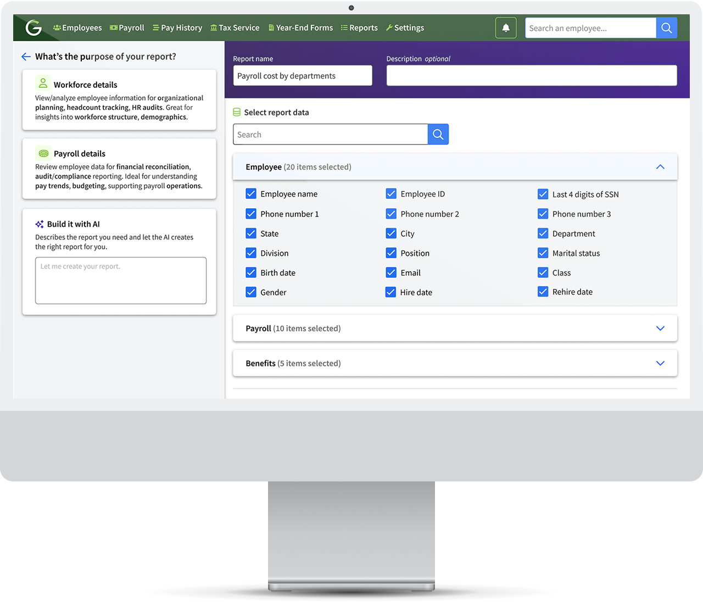
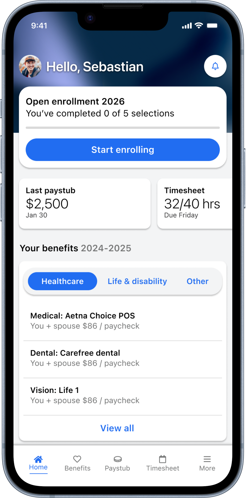
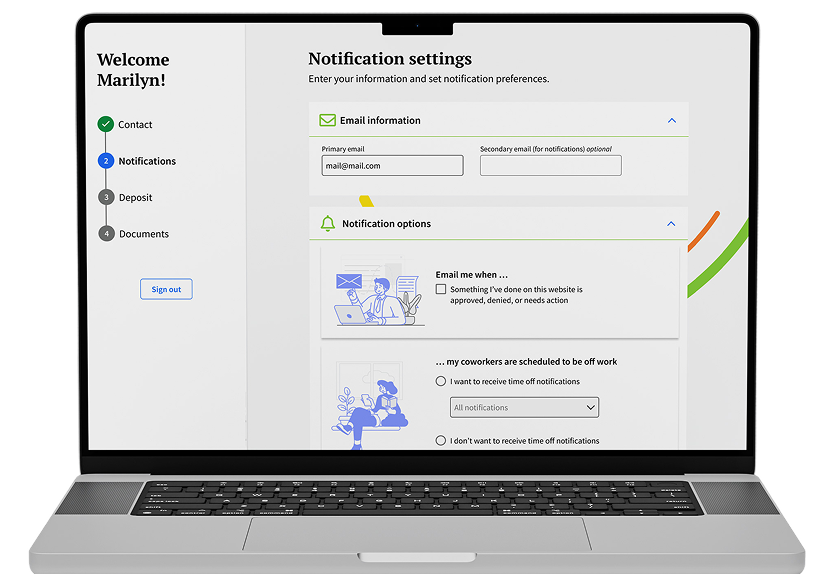
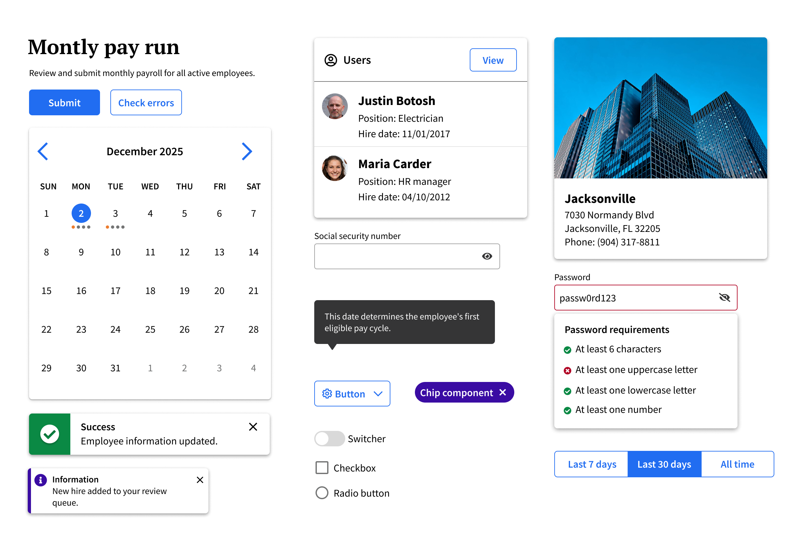

All work
Every project, with the thinking behind it.

Lux Voyage Trip Hub
An operations hub for a luxury travel agency: calls, emails and WhatsApp messages land in one place, an AI assistant drafts the record, and advisors only review and approve.
Read case study
Tethral Shopper demo
An AI shopping agent that works through an MCP, from the site or from Claude and ChatGPT: you add a product and a budget, it finds the stores and prices, and you buy now or get an email when the price drops.
Read case study
AI custom reports
A module where HR admins build, manage and generate their own reports, then describe one in plain language and let AI set it up.
Read case study
Benefits enrollment
The first fully mobile healthcare benefits enrollment for a payroll & HR platform: a dense desktop process turned into guided steps.
Read case study
Parabellum Finance
The internal platform for a litigation funder's back office: invoices, payment tickets, wire instructions, bank reconciliation and month-end reporting in one place, instead of spreadsheets.
Read case study
New hires onboarding
A self-guided onboarding for employees and one review dashboard for HR, across desktop, tablet and mobile.
Read case study
GS Design System
A single source of truth for a payroll platform used by thousands of HR administrators.
Read case study